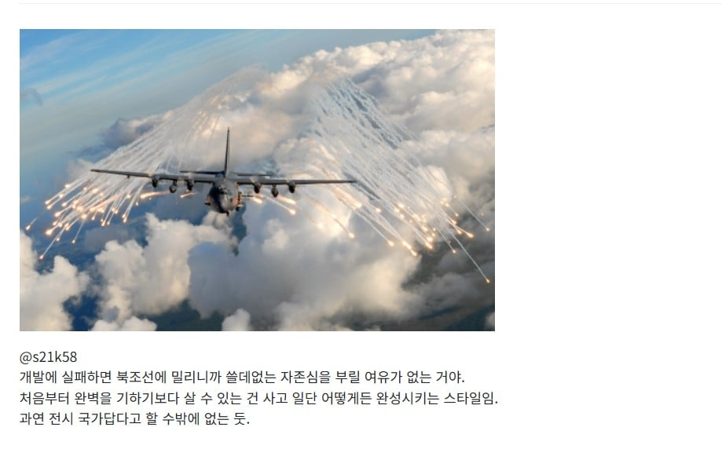

국산화 할 수 있는 부분은 국산화 함
안되는건 돈주고 사서 일단 완성함
기술과 노하우가 쌓이면서 점차 국산화율을 높여감
수출을 통해 가격을 낮추고 규모의 경제를 달성함
====
원래 다 그렇게 하는거 아님?
의외로 잘 안됨 처음부터 100퍼센트 국산기술 자국생산 달성을 목표로 잡았다가 망한 경우가 많음
한국도 k2에 국산 안쓰고 독일산 파워팩 쓴다고 지랄 지랄 난리가 났었음

국산화 할 수 있는 부분은 국산화 함
안되는건 돈주고 사서 일단 완성함
기술과 노하우가 쌓이면서 점차 국산화율을 높여감
수출을 통해 가격을 낮추고 규모의 경제를 달성함
====
원래 다 그렇게 하는거 아님?
의외로 잘 안됨 처음부터 100퍼센트 국산기술 자국생산 달성을 목표로 잡았다가 망한 경우가 많음
한국도 k2에 국산 안쓰고 독일산 파워팩 쓴다고 지랄 지랄 난리가 났었음
애초에 전시 대비 목적도 어느정도 있는 키워주기를 했어서 그럼
이렇게 높은 국산화율 가진거 자체가 말이 안됨
방산뿐만 그런게 아님
고속철도 도입할때 일본 신칸센 차량 도입하려다가
기술이전은 없고 중정비는 철도차량 배에다가 싣고 일본에서 정비받으라길래 꺼지라고 함 ㅋㅋ
그렇게 선정된게 TGV고 기술이전 받아서 고속철 국산개발도 하고 이제는 고속철 수출도 함
철도계에서 일본 싫어하는건 아님
누리로라고 히타치 제작소 제작 전동차도 도입함
레제 맞지? 카타카나 다외움ㅎㅎ
한국 밥상 어디감?
AR15 소총은 어마어마하게 많은 나라에서
사용중이고 관련 특허가 만료되어
정말 여러 나라, 여러 회사에서 생산되고 있음
그런데 이총에 들어가는 부품이 기본형 기준으로
총 126개 라고 함
그리고 놀랍게도
그 모든 부품을 전부 생산하는 업체는
전세계에서 단 하나
우리나라의 SNT모티브(옛날 대우정밀)라고 함
오리지날 AR15를 처음 만든 아말라이트나
(AR15라는 이름 자체가 15번째
개발된 아말라이트 소총이라는 뜻임)
처음으로 제식생산을 했던 콜트사
나중에 미군 납품권을 인수한 FN사...
모두 몇개의 부품만 자기네가 만들고
다른 부품은
외주생산해서 조립만 하는데
전세계 유일 모든 부품을 만드는 회사가
한국에 있다는 거임
그런 대단한 총기제조사를 보유한 나라의 육군은 왜.. ㅜㅜ
난 아직도 K2전차 국산 파워팩에 대해 의문을 못버리겠어...제대로 된 테스트 결과를 못봐서 그런진 몰라도
주변 강국들의 눈치를 보지 않고 실컷 개발해도 괜찮은
SF영화에 나오는 병기개발 행성 같음 ㅋㅋ
상시 전면전 총력전 대비하는 나라가 거의 없는데다가 제조업 벨류체인을 다 가지고 있음